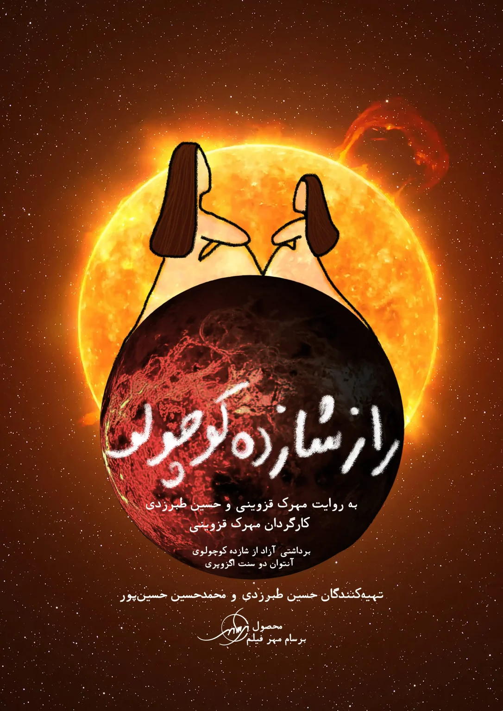

سریال صوتی راز شازده کوچولو
محصول ۱۴۰۳
تاتر “راز شازده کوچولو” چراغ روشنی بود که راه “برسام مهر فیلم” رو برای ساختن کتاب صوتی، سریال صوتی و ساختن “استودیوی برسام مهر” روشن کرد و فرصت تجربه های جدیدتری رو برای من (حسین طبرزدی) و مهرک قزوینی، بوجود آورد که اونهم برامون سرشار از لذته… اینقدر که داریم یه سری متن می نویسیم با عشق تولید پادکست و فایل های صوتی… عکس و فیلم و تیزرهای مربوط به صدابرداری هامون رو اینجا ببینید…